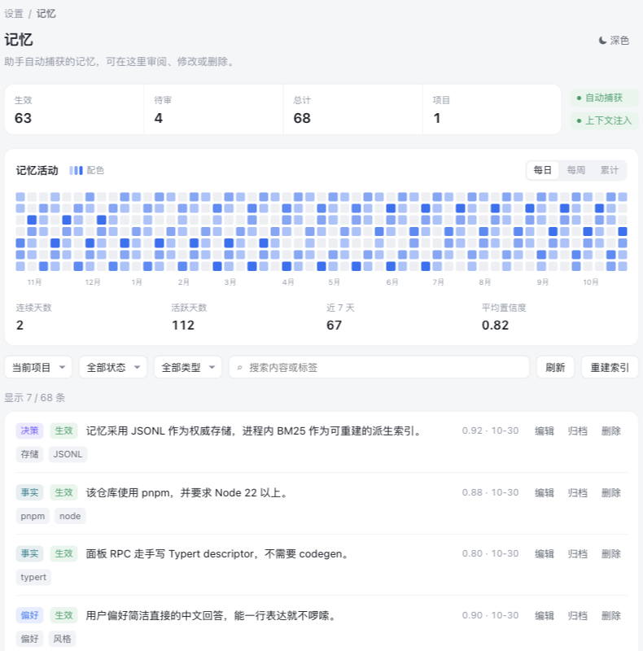
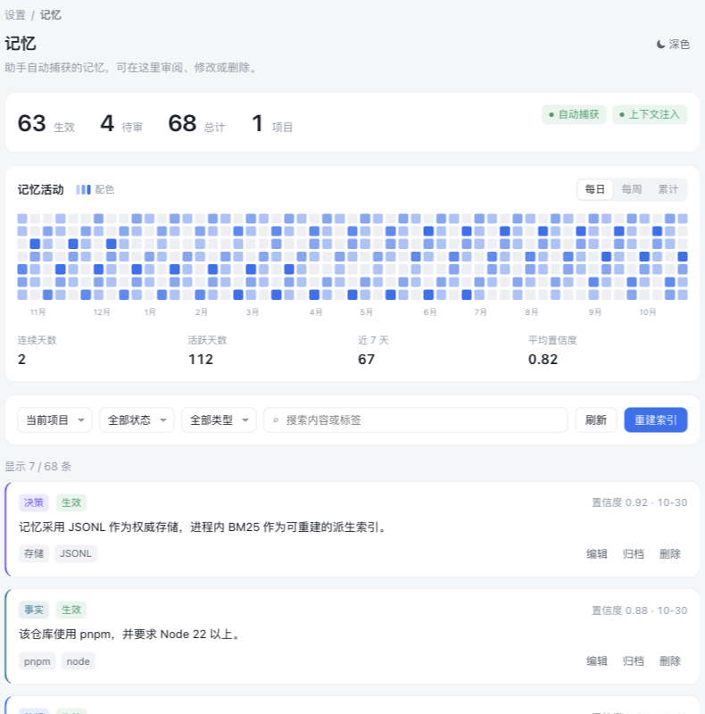
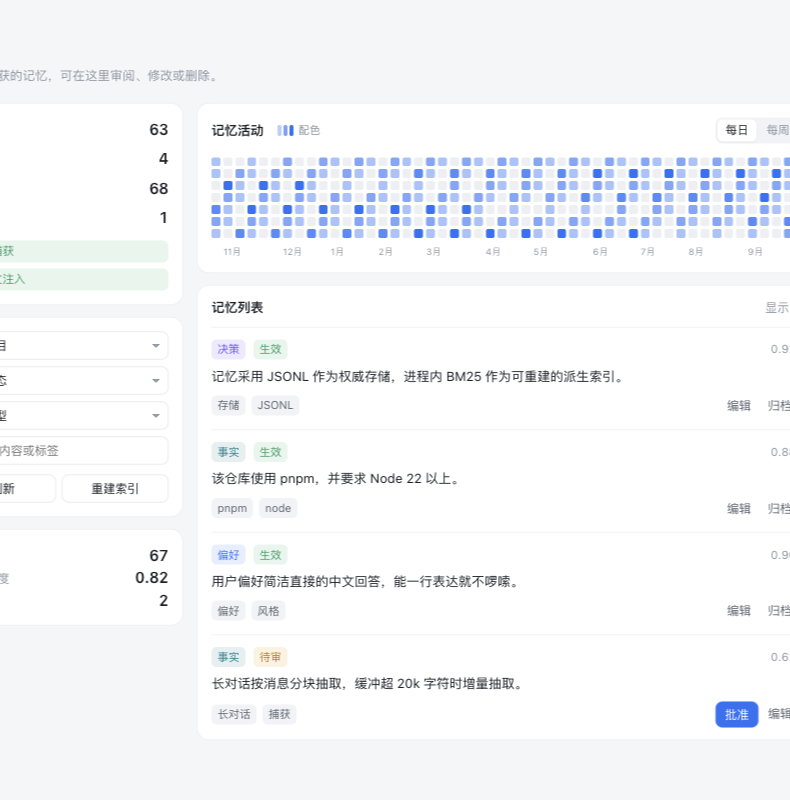

A · 紧凑单行 推荐
指标与开关同一行，过滤工具栏一行，列表条目单行展示，最省纵向空间。

同一份数据（68 条记忆、63 生效）的三种排布。示意数据，配色与浅深色可切换。
指标与开关同一行，过滤工具栏一行，列表条目单行展示，最省纵向空间。

每个区域独立成卡，列表条目带类型色条，信息层级更清晰、更有呼吸感。

左侧固定指标与筛选，右侧活动与列表；适合更宽的设置页，一屏看到更多。

说明：热力图使用示意数据（约 112 个活跃日），便于比较视觉；真实面板在数据稀少时会显示「随记忆积累逐渐点亮」提示。